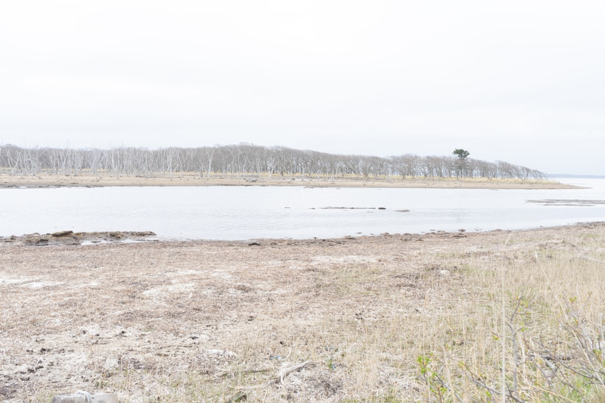

### The Silent Robbery: How Corporations Exploit Our Natural Resources for Profit
### The Silent Robbery: How Corporations Exploit Our Natural Resources for Profit In a world where the megacorporations are driven by profit at the expense of our planet, the very essence of natural resources is being threatened, and we, the people, are left to bear the burden. The relentless extraction of minerals, water, and energy sources is not just an environmental crisis but a blatant act of economic injustice that serves to fill the coffers of a few at the expense of the majority. It is high time we awaken to this silent robbery, where our resources are plundered, leaving behind a desolate landscape and disempowered communities. Across the globe, the corporate elite have mastered the art of resource extraction. Companies like ExxonMobil, Nestlé, and Barrick Gold operate with little regard for the health of our planet or the well-being of local communities. They inflict devastation on ecosystems while raking in billions. Meanwhile, they maintain a facade of corporate social responsibility, which is nothing but a smokescreen to distract from their destructive policies. This is a system that rewards greed and exploits the marginalized. ### Water: The New Gold? Water is quickly becoming the new gold, and we are witnessing an alarming trend in its privatization. Nestlé has made headlines for extracting groundwater in drought-stricken regions, selling it back to us at exorbitant prices while local residents are left with dry wells. This is a blatant theft of a communal resource. Water should be a basic human right, not a commodity for corporations to monopolize and profit from. The fact that companies can legally hoard water while communities suffer should infuriate anyone with a conscience. The fight against water privatization isn't just a matter of environmentalism—it is about social justice. When corporations have the audacity to claim ownership over essential resources, they are essentially robbing future generations of their rights. If we continue to allow this to happen, we are complicit in our own dispossession. It's time for grassroots movements to unite and demand the nationalization of water sources as a public good, not a business opportunity. ### The Minerals Beneath Our Feet Let's turn our attention to the extraction of minerals—another battlefield where the oppressed are pitted against the capitalist system. The push for lithium, cobalt, and other critical minerals fuels the insatiable appetite of tech conglomerates that churn out electric vehicles and smartphones. However, the extraction of these resources often happens in the Global South, where communities face environmental degradation, displacement, and labor exploitation. Take the Democratic Republic of the Congo, for example, where the cobalt used in our cell phones, laptops, and electric vehicles is mined under brutal conditions. Many workers earn less than a dollar a day in notoriously unsafe mines, while tech giants like Apple, Tesla, and Samsung profit from their misery. It is essential to highlight that this cycle of exploitation is perpetuated by our consumer habits. In our rush to adopt green technologies, we must not forget the human costs entailed in their production. The call for ethical sourcing has become a mere PR tactic for companies that refuse to overhaul their supply chains fundamentally. We must push for real accountability that not only emphasizes ethical labor rights but also environmental sustainability. The tech industry cannot hide behind greenwashing any longer; it must address the systemic issues within its operations. ### Fueling the Climate Crisis And what about fossil fuels? The continued investment in oil and gas projects epitomizes the corporate greed that places profit over the planet. Even in the face of mounting climate disasters, those at the top continue to fund projects that devastate our surroundings while attempting to convince us of a transition to cleaner energy. The hypocrisy is staggering—what do they take us for, fools? The fossil fuel industry has known for decades about the detrimental impact of carbon emissions on our climate. Yet, they continue to pour money into lobbying against climate legislation, effectively blocking meaningful actions to mitigate the crisis. The latest news of record profits amidst a climate apocalypse showcases the very essence of capitalism: the rich get richer while the rest of us scramble to adapt to rapidly changing conditions. This is a call to arms. We must hold these corporate giants accountable for their role in fueling the climate crisis. We must demand systematic changes that prioritize people and the planet over profits. Transitioning to renewable energy should not become another avenue
Updated 2025-08-03 07:55 UTC